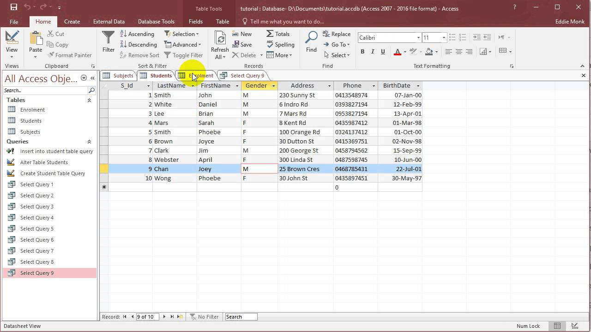

Le Monde Informatique
Microsoft Access (officiellement Microsoft Office Access)
Microsoft Access (officiellement Microsoft Office Access) est une base de données relationnelle éditée par Microsoft. Ce logiciel fait partie de la suite Microsoft Office. MS Access est composé de plusieurs programmes : le moteur de base de données Microsoft Jet, un éditeur graphique, une interface de type Query by Example pour interroger les bases de données, et le langage de programmation Visual Basic for Applications. Depuis les premières versions, l'interface de Microsoft Access permet de gérer graphiquement des collections de données dans des tables, d'établir des relations entre ces tables selon les règles habituelles des bases de données relationnelles, de créer des requêtes avec le QBE (Query by Example, ou directement en langage SQL), de créer des interfaces homme/machine et des états d'impression. Comme pour les autres logiciels Office, le VBA,Visual Basic for Applications, permet de créer des applications complètes et en réseau local, y compris en utilisant, créant ou modifiant les fichiers (documents Word, classeurs Excel, instances Outlook, etc.) des autres logiciels de la suite sans quitter Access. La dernière version en date est la version 2016 ; elle fait partie de la suite Microsoft Office 2016 et est incluse dans certaines options de l'abonnement à Office 365. La version par abonnement, Microsoft Office Access 365, est actualisée automatiquement comme celle de Windows 10. Access 2016 intègre de nouvelles fonctionnalités dont de nouveaux thèmes, la modernisation des cinq modèles les plus populaires et l'exportation d’informations de sources de données liées vers Excel.
| Disigned by |